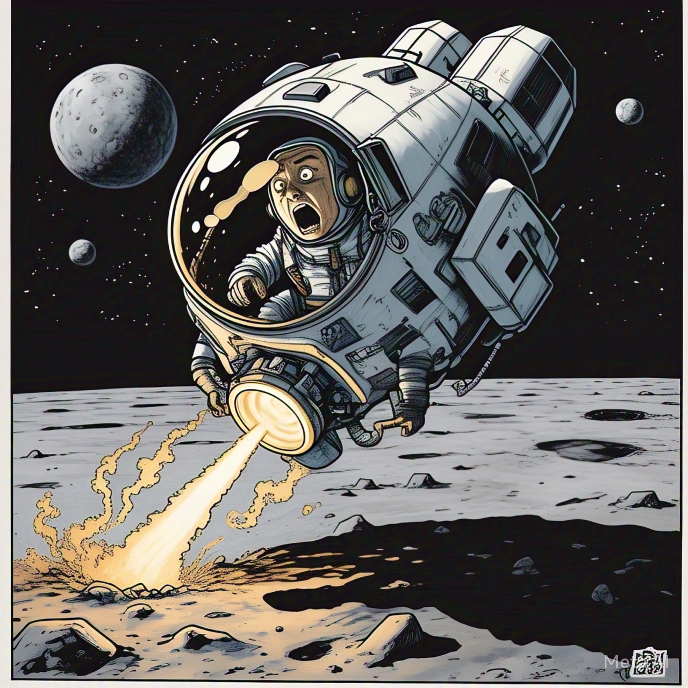

Ingresar al Juego
Usa los botones de flecha para controlar el aterrizaje. Con cada planeta nuevo aumenta la gravedad y la dificultad. Intenta aterrizar en las plataformas verdes antes de que se acabe el combustible
Usa los botones de flecha para controlar el aterrizaje. Con cada planeta nuevo aumenta la gravedad y la dificultad. Intenta aterrizar en las plataformas verdes antes de que se acabe el combustible